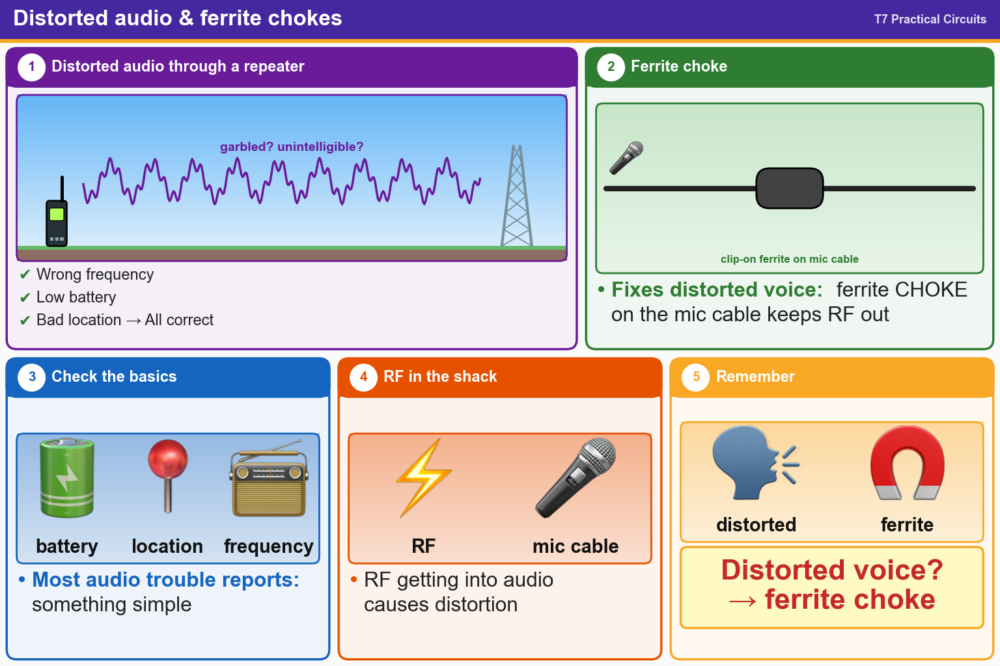

💡 Distorted voice? Try a clip-on ferrite choke on the mic cable.
Pick an answer for each question, then press Grade at the bottom.
T7B10
What might be a problem if you receive a report that your audio signal through an FM repeater is distorted or unintelligible?
✘A.You are speaking too loudly or too close to the microphone
✘B.Your transmitter is slightly off frequency
✘C.You are in a bad location
✔D.All these choices are correct
T7B11
Which of the following can eliminate distorted voice transmissions?
✘A.Adding extra feedline to the antenna to lower SWR
✘B.Turning the squelch control fully clockwise to prevent the transmitted signal from triggering the squelch circuit
✔C.Adding a clip-on ferrite “choke” to the microphone cable to prevent the transmitted signal from feeding back into the transmitter
✘D.Turning the radio on and off to reset the computer-controlled circuitry